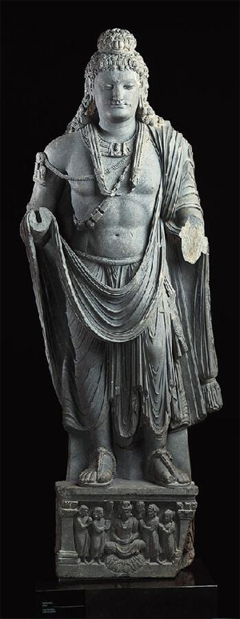

Greeks in Afganistan? Impossible!
When people hear about trade in the days before modern tranist, often the term "Silk Road" gets tossed around alot. Due to the way cultures on the Eurasian continent developed, there were multiple seperate regions that interacted very little beyond trade. To the East was the great civilizations of China, and the Indian Subcontinent. To the West, the Medditeranin, and Mesopitamia. Persia had connected the two for years, and when Alexanders men penetrated the eastern reaches of that empire they kept going. Much of modern day Afganistan and Pakistan were conquered, and gained independance following his death

The lands in Afganistand, then called Sogdia, became Baktria. Though records are sparse about its internal history, though the record of crafts and coins indiciate a thriving kingdom with a melting pot culture of Greeks, Sogdians, and the other Indo-Aryan cultures of the region. Eventually however they were driven out of Sogdia by nomads from the steppes. They grew in the Indus river valley however, and eventually embraced Buddhism. The King Menander embarked on a building spree, and was recorded in the Buddhist canon as the King Milinda. However, this kingdom faded in time as well. They had left their mark in the region however, and influenced the formation of Buddhism. It is said that many of the first Buddhist statues were made during this reign.
